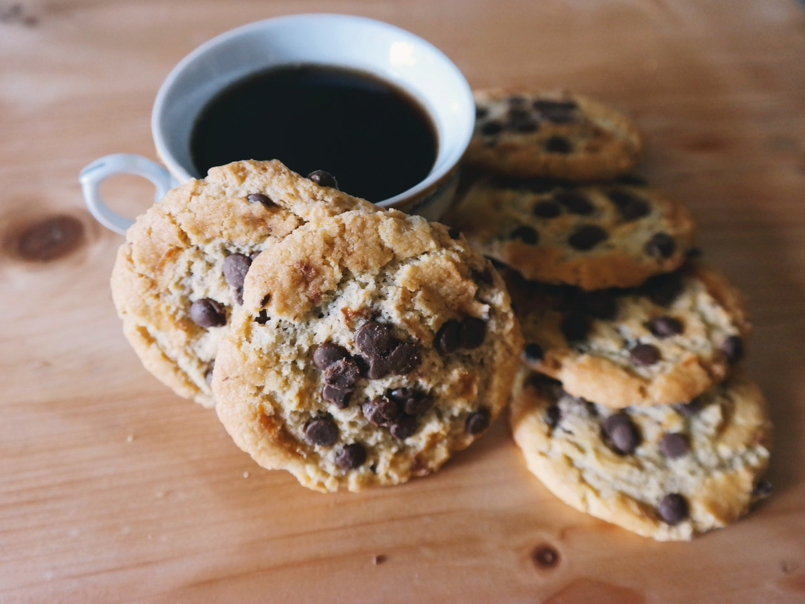

Chocolate Chip Cookies

The ultimate big, soft, and super chewy chocolate chip cookies
These chocolate chip cookies made my mom decide
that she will be abandoning her recipe that she’s used
for over 2 decades. These cookies are so good that I’ve
dubbed them “The Best Chewy Café-Style Chocolate Chip Cookies”.
These cookies are so soft and chewy that after sitting out on
the counter uncovered overnight (woops) they were STILL SOFT
AND DELICIOUS IN THE MORNING. In fact, I think they were even
softer the second day!
Ingredients
- 2 cups + 2 tablespoons all purpose flour
- 1 teaspoon baking soda
- 2 teaspoons cornstarch
- 1 teaspoon salt
- 1 ½ sticks (6 oz) unsalted butter, melted and cooled
- 1 cup dark brown sugar, lightly packed
- ½ cup granulated sugar
- 2 large eggs
- 2 teaspoons vanilla extract
- 1 1/2 cups dark chocolate chips, plus more for topping
Steps to make this beautiful cookies
- In a medium-sized bowl, whisk together the flour, baking soda, cornstarch, and salt. Set aside.
- In a large bowl, beat together the cooled melted butter and the sugars with a hand-mixer for about one minute. Then, add in the eggs and vanilla extract. Beat until just combined.
- Slowly add in the dry ingredients and mix briefly, just until there are no flour clumps left. Fold in the chocolate chips.
- Cover and refrigerate the dough for 30 minutes to an hour.
- Remove the dough from the refrigerator and preheat the oven to 350°F, making sure you have the racks in the middle of the oven. Line two baking sheets with parchment paper.
- Scoop 1/4 cup of cookie dough at a time and roll into balls. Then, tear the balls in half by pulling gently on both sides. Smush the two halves together again, but this time have the lumpy, torn sides face upward. Place on the prepared baking sheet, making sure the cookies have plenty of space to spread. You should be able to fit 6-8 cookies on each tray.
- Bake for about 10-14 minutes, rotating half-way through, or until the cookies have spread out and the edges are golden, but the centers of the cookies still look soft and undercooked. Every oven is different, so I recommend starting with just one or two cookies on the tray to see what baking time works best for you!
- Let the cookies cool on the baking sheets until the cookies are firm enough to remove, about 15 minutes. As the cookies are cooling, press additional chocolate chips into the tops for a more bakery-style look.